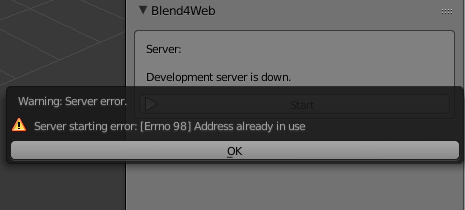
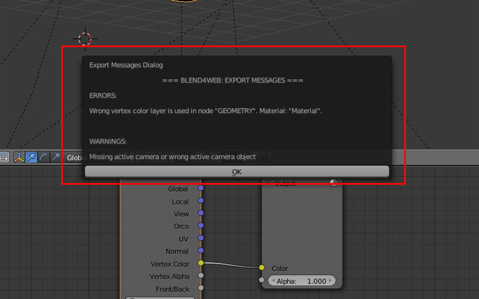
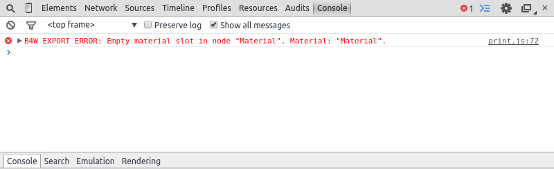
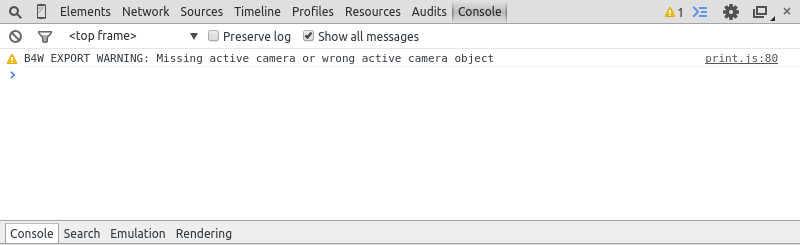

Аддон¶
Содержание
Локальный сервер разработки¶
Настройки локального сервера разработки находятся в меню File > User Preferences... (горячие клавиши Ctrl-Alt-U). Здесь можно изменить номер порта, используемый при создании локального сервера разработки (6687 по умолчанию), или включить автоматический запуск сервера при запуске Blender’a: для этого достаточно включить опцию Run on Startup в настройках аддона.
{kind=link}
После изменения настроек локального сервера разработчика требуется перезапуск Blender’a.
Имеется возможность сделать локальный сервер доступным из внешней сети. Для этого достаточно включить свойство Enable External Requests.
Если не был настроен автоматический запуск сервера, то его можно стартовать вручную по кнопке Start Server во вкладке Render, на панели Developement Tools:
{kind=link}
Примечание
Если запуск локального сервера невозможен, вместо кнопки Start Server будет выведено соответствующее сообщение.
В случае ошибки запуска сервера будет показано окно с описанием причины:
Чаще всего ошибка возникает из-за того, что указанный серверу адрес уже используется другим приложением.
Нажмите кнопку SDK Index для запуска в браузере обзорной веб-страницы Blend4Web SDK, доступной по адресу http://localhost:6687.

При этом будет автоматически запущен браузер, используемой в операционной системе по умолчанию.
Кнопка Project Manager открывает менеджер проектов.
Кнопка Fast Preview вызывает просмотрщик сцен и загружает в него сцену, открытую в Blender на данный момент.
Сервер может быть остановлен по нажатию на кнопку Stop Server. Сервер также прекращает работу при закрытии программы Blender.
Запуск просмотрщика сцен и демо-приложений¶

Обзорная страница содержит следующие ссылки:
Примеры кода: список демонстрационных приложений. Для их запуска необходим браузер с поддержкой WebGL.
Страница WebGL Report, с помощью которой вы можете проверить степень поддержки WebGL вашим браузером;
Документация на трёх разных языках, доступная как в HTML-, так и в PDF-формате;
Документация API, содержащая описания всех модулей и методов API, доступных в движке Blend4Web;
Уроки
Страница “Вопрос-Ответ”, на которой вы можете найти ответы на некоторые общие вопросы, связанные с использованием движка;
Форумы сообщества;
Адрес электронной почты поддержки (доступен только для PRO-версии).
Примечание
Если приложения SDK не отображаются корректно, или появляются сообщения об ошибках, необходимо предпринять действия, описанные в разделе Проблемы при запуске движка.
Форматы экспорта¶
После того, как сцена закончена, её нужно преобразовать в формат, понятный движку Blend4Web.
На сегодняшний день поддерживаются два формата экспорта: JSON и HTML.
JSON¶
При экспорте в этот формат создаётся файл .json (JavaScript Object Notation), в котором хранятся экспортируемые структуры данных и ссылки на внешние ресурсы (изображения, звуки и пр.), а также файл .bin, хранящий массивы данных моделей в бинарном формате.
Если медиаресурсы запакованы в blend-файл, при экспорте они будут извлечены и размещены в каталоге проекта (внутри каталога SDK). При этом таким файлам будут автоматически присвоены имена (отличные от исходных), что может затруднить дальнейшую работу с ними.
Ресурсы рекомендуется размещать в отдельной директории внутри каталога SDK, например projects/project_name/имя_проекта.
Примечание
В соответствии с требованиями безопасности, сервер разработки имеет доступ только к каталогу SDK. Если медиаданные расположены в другом каталоге, сервер не сможет подключить их при экспорте (даже если в самом Blender они работают нормально).
Пути к внешним ресурсам должны быть относительными. Если это не так, следует выполнить команду File > External Data > Make All Paths Relative, иначе могут возникнуть проблемы с открытием файлов на других компьютерах.
Это основной формат для сложных проектов, которые могут включать несколько сцен и требуют написание программного кода на JavaScript. Работа с проектом описана в соответствующем разделе.
HTML¶
При экспорте в этот формат все ресурсы сцены упаковываются в один файл, имеющий расширение HTML. HTML-файл включает не только сцену, но и текстуры, звуки, сам движок Blend4Web и стандартный веб-плеер. Такой файл может быть воспроизведен на любом компьютере или мобильном устройстве, имеющем браузер с поддержкой WebGL.
HTML-файлы не могут применяться для дальнейшей разработки, но и не требуют никаких дополнительных действий для запуска. Этот формат рекомендуется применять для относительно простых проектов небольшого размера.
Однако следует заметить, что HTML-приложения не поддерживают следующие возможности:
Опции экспорта¶
- Autosave blend File
Автосохранение файла, из которого осуществляется экспорт. Включено по умолчанию. Осуществляется непосредственно после экспорта с целью поддержки соответствия между текущим содержимым blend-файла и экспортного файла. Кроме того, для удобства в blend-файле сохраняется относительный путь к экспортному файлу.

- Strict Mode
Данный режим блокирует экспорт при наличии ошибок и сообщений, требующих внимания пользователя. Режим включается при выставлении опции
Strict Modeв меню экспорта:

При наличии некритических ошибок экспорта или сообщений, требующих внимания пользователя, вашему вниманию будет представлено диалоговое окно вида:
{kind=link}
- Export Converted Media
Опция доступна при html-экспорте. Включение данного режима экспорта позволяет записать в HTML файл конвертированные медиафайлы разных форматов. Это необходимо использовать при создании кроссбраузерных и кроссплатформенных приложений при html-экспорте. При этом в html-файл будут записываться файлы, созданные с использованием нашего конвертера.

- Run in Viewer
Автоматически запустить просмотрщик сцен и добавить в него экспортируемую сцену.
При использовании локального сервера разработки, имеется возможность открыть сцену, экспортированную в формате
.json, в просмотрщике сцен. Для этого при экспорте необходимо выбрать любой путь, лежащий внутри файловой структуры Blend4Web SDK.В качестве директории для экспорта может использоваться созданная пользователем директория внутри Blend4Web SDK. При несоблюдении этого условия опция не будет отображаться в меню экспорта. Также опция не будет отображаться если локальный web-сервер не запущен.
{kind=link}
Ошибки инициализации¶
Ошибки инициализации могут проявляться при инициализации аддона, либо при загрузке сцены в Blender. При возникновении появится диалоговое окно с описанием ошибки.

Сообщение об ошибке |
Причина |
|---|---|
| Blend4Web initialization error! Add-on is not compatible with the PLATFORM platform. | Ошибка загрузки аддона. Аддон не совместим с платформой PLATFORM. |
| Warning: Blender version mismatch. Blender VER_REQUIRED is recommended for the Blend4Web add-on. Current version is VER_CURRENT. | Предупреждение о возможной несовместимости с текущей версией Blender. Для работы рекомендуется версия Blender’а VER_REQUIRED. Текущая версия - VER_CURRENT. |
| Incorrect add-on directory name. | Некорректное имя директории аддона. Структура аддона в архиве была повреждена, либо была нарушена целостность архива. |
Ошибки совместимости¶
Ошибки совместимости версий могут проявиться при просмотре сцены в браузере, если версия аддона, которым был произведен экспорт сцены, не соответствует версии движка Blend4Web, который пытается эту сцену загрузить, а также если .bin-файл не соответствует .json-файлу.
Версия движка сильно устарела по сравнению с версией аддона, которым был произведен экспорт сцены. Сцена не будет загружена. Рекомендуется использовать последнюю версию движка и аддона.
Сообщение об ошибке |
Причина |
|---|---|
| JSON version is too old relative to B4W engine: VER_OLD, required: VER_NEW. Reexport scene with the latest B4W add-on to fix it. | Версия аддона, которым была экспортирована сцена, сильно устарела: VER_OLD, движком требуется - VER_NEW. Сцена не будет загружена. Рекомендуется переэкспортировать сцену аддоном последней версии, а также использовать последнюю версию движка. |
| JSON version is a bit old relative to B4W engine: VER_OLD, required: VER_NEW. Some compatibility issues can occur. Reexport scene with the latest B4W add-on to fix it. | Версия аддона, которым была экспортирована сцена, немного устарела: VER_OLD, движком требуется - VER_NEW. Сцена будет загружена, однако возможны различные ошибки. Рекомендуется переэкспортировать сцену аддоном последней версии, а также использовать последнюю версию движка. |
| B4W engine version is too old relative to JSON. Can’t load the scene. Update your engine version to fix it. | Версия движка сильно устарела по сравнению с версией аддона, которым был произведен экспорт сцены. Сцена не будет загружена. Рекомендуется использовать последнюю версию движка и аддона. |
| B4W engine version is a bit old relative to JSON. Some compatibility issues can occur. Update your engine version to fix it. | Версия движка немного устарела по сравнению с версией аддона, которым был произведен экспорт сцены. Сцена будет загружена, однако возможны различные ошибки. Рекомендуется использовать последнюю версию движка и аддона. |
| BIN version does not match to JSON version: VER_BIN, required: VER_JSON. Couldn’t load the scene. Reexport scene to fix it. | Версия загружаемого .bin-файла сильно устарела по сравнению с .json-файлом: VER_BIN, версия .json-файла: VER_JSON. Сцена не будет загружена. Рекомендуется переэкспортировать сцену. |
| BIN version does not match to JSON version: VER_BIN, required: VER_JSON. Some compatibility issues can occur. Reexport scene to fix it. | Версия загружаемого .bin-файла немного устарела по сравнению с .json-файлом: VER_BIN, версия .json-файла: VER_JSON. Могут возникнуть ошибки несовместимости. Рекомендуется переэкспортировать сцену. |
Критические ошибки экспорта¶
При возникновении ошибок во время экспорта появляется диалоговое окно BLEND4WEB EXPORT ERROR с описанием проблемы:
COMPONENT- тип компонента (объект, меш, материал, текстура и т.д.), при экспорте которого произошла ошибка.
NAME- имя компонента.
ERROR- краткое описание возникшей проблемы на англ. языке.

Сообщение об ошибке |
Причина |
|---|---|
| Export to different disk is forbidden | Не разрешен экспорт в директорию, находящуюся на другом диске |
| Incompatible objects with a shared mesh; The OBJECT_NAME object has both vertex groups and a shared mesh | Несовместимые объекты с общим мешем. Не допускается экспорт объекта с общим мешем и вертексными группами. Исключения: экспорт возможен, если на объекте включены опции |
| Incorrect mesh; Corrupted file: Wrong vertex color values | Поврежденный файл: некорректное значение вертексного цвета. |
| Loading of resources from different disk is forbidden | Не разрешен экспорт ресурсов из директории, находящейся на другом диске. |
| The material has a normal map but doesn’t have any material nodes | Нодовый материал использует |
| The mesh has a UV map but has no exported material | Меш имеет текстурную развертку, но не имеет материала, который бы экспортировался. |
| The mesh has a vertex color layer but has no exported material | Меш имеет слой вертексного цвета, но не имеет материала, который бы экспортировался. |
| No such file or directory | Данная директория не существует. |
| Permission denied | Нет прав доступа к текущей директории. |
| Wrong edited normals count; It doesn’t match with the mesh vertices count | Число редактируемых нормалей не совпадает с числом вершин меша. Требуется сделать |
| Wrong overridden bounding box; Check the mesh’s bounding box values | Указаны неверные размеры при переопределении |
Некритические ошибки экспорта¶
В отличие от критических ошибок экспорта, рассмотренных ранее, данные ошибки не препятствуют экспорту, однако могут приводить к некорректному отображению сцен. Сообщения выводятся в консоли браузера (горячая клавиша F12) при загрузке сцены. Сообщение имеет вид:

B4W EXPORT ERROR: Сообщение об ошибке
{kind=link}
Сообщение об ошибке |
Причина |
|---|---|
| Canvas texture ID NAME already exists. Texture NAME. | Данный идентификатор для объекта типа |
| Dupli group error for object OBJECT_NAME. Objects from the GROUP_NAME dupli group on the OBJECT_NAME object cannot be exported | Ни один из объектов группы GROUP_NAME, выбранной для дублирования на объекте OBJECT_NAME, не экспортируется. Требуется разрешить экспорт хотя бы одного из объектов группы, либо убрать дублирование группой. |
| Empty canvas texture ID for texture NAME. | Пустое поле идентификатора для объекта типа |
| Empty material slot in node “NAME”. Material: “NAME”. | Не задан материал в ноде: “NAME” |
| Environment map in the “NAME” world texture slot cannot be a movie. | Карта окружения не может быть видео. |
| Ignoring LODs after empty LOD for the NAME object. | Все LOD-объекты, следующие за пустым слотом, были проигнорированы. |
| Incomplete mesh NAME; Dynamic grass vertex colors required by material settings | Неполный меш: специальный материал для ландшафта использует опции |
| Incomplete mesh; Material settings require vertex colors | Неполный меш: материал меша имеет включенную опцию вертексного цвета ( |
| Incorrect NLA script, falling back to simple sequential NLA. | Некорректный NLA-скрипт. Вместо него будет использоваться стандартная NLA-анимация. |
| Incorrect vertex animation for mesh NAME. Object has no vertex animation. | Включен экспорт вертексной анимации для объекта, но ни одной анимации не имеется. |
| Incorrect vertex animation for mesh NAME. Unbaked “ANIM_NAME” vertex animation. | Включен экспорт вертексной анимации для меша, но анимация ANIM_NAME не содержит ни одного кадра. |
| Incorrect mesh NAME; Wrong group indices | Меш содержит вершины, привязанные к несуществующей группе. |
| Incorrect mesh NAME; Wrong vertex positions | Поврежденный файл: некорректное значение координаты вертекса. |
| Incorrect mesh NAME; Wrong normals | Поврежденный файл: некорректное значение нормали. |
| Incorrect mesh NAME; Wrong tangents | Поврежденный файл: некорректное значение тангенты. |
| Incorrect mesh NAME; Wrong texture coordinates | Поврежденный файл: некорректное значение текстурной координаты. |
| Incorrect mesh NAME; Wrong vertex group weights | Поврежденный файл: некорректное значение веса вертекса в вертексной группе. |
| Incomplete vehicle. The NAME vehicle doesn’t have any chassis or hull | Моделируемое средство передвижения NAME является незавершенным: оно должно содержать один элемент |
| Incomplete vehicle. The NAME vehicle requires at least one bob | Моделируемое средство передвижения NAME является незавершенным: оно должно содержать хотя бы один элемент |
| Incomplete vehicle. The NAME vehicle requires at least one wheel | Моделируемое средство передвижения NAME является незавершенным: оно должно содержать хотя бы один элемент |
| Invalid link found in node material. Material: “NAME”. | Нодовый материал с именем “NAME” содержит некорректные связи между нодами. |
| No image in the NAME texture. [Material: NAME.] | У текстуры отсутствует изображение. |
| No texture for the NAME particle settings texture slot. | В текстурном слоте системы частиц отсутствует текстура. |
| No texture in the NAME world texture slot. | В текстурном слоте мира NAME отсутствует текстура. |
| No texture in the texture slot. Material: NAME. | В текстурном слоте материала отсутствует текстура. |
| Node material invalid: “NAME”. Check sockets compatibility: “FROM_NODE” with “TO_NODE”. | Ошибка нодового материала. Типы входа и выхода связи между нодами |
| Object “NAME” hasn’t renderable data. Converted to EMPTY. | Объект с именем “NAME” является вырожденным, например, не имеет полигонов, поэтому его тип изменён на EMPTY. |
| Object: “NAME” > Constraint: “CONSTRAINT_TYPE”. Check constraint settings. | Ограничитель типа “CONSTRAINT_TYPE”, назначенный объекту “NAME”, не настроен должным образом. |
| Object “NAME” has the mesh with shape keys. The property “Relative” of mesh has been enabled. | Объект с именем “NAME” имеет меш с опорными фигурами. На меше было включено свойство “Relative”. |
| Object “NAME” has no data or data is broken. Change object type to EMPTY. | Объект с именем “NAME” не имеет меша, либо меш повреждён. Тип объекта изменён на EMPTY. |
| Packed media “FILE_NAME” has not been exported to “CONVERTED_FILE_PATH” | Запакованный медиа файл “FILE_NAME” не может быть конвертирован в “CONVERTED_FILE_PATH”. Требуется распаковать файл и произвести конвертацию. |
Particle system error for “NAME”;
The “NAME” vertex color specified
in the from field is missing in
the last of the “OBJECT_NAME”
object’s vertex colors |
Ошибка системы частиц. Вертексный цвет NAME указанный в поле |
Particle system error for “NAME”;
The “NAME” vertex color specified
in the to field is missing in
the list of the “OBJECT_NAME”
object’s vertex colors |
Ошибка системы частиц. Вертексный цвет NAME указанный в поле |
Particle system error for “NAME”;
The “NAME” vertex color specified
in the “to field is missing in
the “OBJECT_NAME” object
(“GROUP_NAME” dupli group) |
Ошибка системы частиц. Вертексный цвет NAME указанный в поле |
| Particle system error for object “NAME”. Invalid dupli object “OBJECT_NAME”. | Ошибка системы частиц для объекта NAME. Неверный дупли объект OBJECT_NAME. |
| Particle system error. Unsupported render type “TYPE” for the HAIR particles “NAME” on object “OBJECT_NAME”. Particle system removed. | Ошибка системы частиц. Неподдерживаемый тип рендера TYPE для EMITTER/HAIR системы частиц с именем PSYS_NAME, находящейся на объекте NAME. Система частиц удалена. |
| Particle system error. Unsupported render type “TYPE” for the EMITTER particles “NAME” on object “OBJECT_NAME”. Particle system removed. | Ошибка системы частиц. Неподдерживаемый тип рендера TYPE для EMITTER/HAIR системы частиц с именем PSYS_NAME, находящейся на объекте NAME. Система частиц удалена. |
| Particle system error for “NAME”. Dupli object isn’t specified. | Ошибка системы частиц. Не выбран объект, используемый в качестве частицы. |
| Particle system error for “NAME”. Dupli group isn’t specified. | Ошибка системы частиц: не указана группа, использующаяся для генерации частиц. |
| Particle system error for “NAME”. Wrong dupli object type “TYPE”. | Ошибка системы частиц. В качестве частицы выбран объект неподходящего типа. Поддерживаемые типы: |
| Particle system error for “NAME”. Dupli object “NAME” has not been exported. | Объект NAME, выбранный в качестве частицы, не экспортируется (на нем выбрана опция |
| Particle system error for “NAME”. The “GROUP_NAME” dupli group contains no valid object for export. | Ошибка системы частиц. Ни один подходящий объект из группы GROUP_NAME, выбранной в качестве частицы, не экспортируется. Либо на таких объектах выбрана опция |
| Sound file is missing in the SPEAKER object “NAME”. Converted to EMPTY. | У объекта типа SPEAKER отсутствует звуковой файл. Тип объекта изменён на EMPTY. |
| The lamp object “NAME” has unsupported AREA type. Changed to SUN. | Источник света “NAME” имеет неподдерживаемый тип AREA. Тип источника изменён на SUN. |
| The main scene NAME can not be rendered by another scene. Material NAME has been removed. | Основная сцена NAME не может отображаться другой сценой. Материал NAME был удален. |
| The NAME action has decimal frames. Converted to integer. | Анимация NAME содержит дробные значения кадров, что не поддерживается. Округлено до целых. |
| The NAME armature modifier has a proxy object as an armature. Modifier removed. | Модификатор арматуры имеет прокси объект в качестве арматуры. |
| The NAME armature modifier has no armature object or it is not exported. Modifier removed. | В модификаторе NAME типа |
| The NAME curve modifier has no curve object. Modifier removed. | В модификаторе NAME типа |
| The NAME curve modifier has unsupported curve object. Modifier removed. | В модификаторе NAME типа |
| The NAME object has the NAME armature modifier and a vertex animation. Modifier removed. | Объект NAME имеет вертексную анимацию и арматурный модификатор. Модификатор удален. |
| The NAME object has the NAME armature modifier. It belongs to a not exported scene. Modifier removed. | В модификаторе NAME типа |
| The NAME LAMP node has no lamp object. Material: NAME. | В ноде NAME типа |
| The NAME node is not supported. The NAME material will be rendered without nodes. Material: NAME. | Нода с данным именем не поддерживается движком, поэтому нодовый материал будет отключён. Чаще всего проблемы подобного рода возникают при использовании нод Cycles. |
| The NAME object has NAME armature modifier which references the wrong group. Modifier removed. | Объект должен находиться в той же группе, что и арматура или оба объекта должны явно присутствовать на сцене. |
| “TEXTURE_TYPE” texture type is not supported for world “NAME”. | TEXTURE_TYPE тип текстуры не поддерживается для мира, WORLD_NAME |
| Using B4W_REFRACTION node NODE_NAME with incorrect type of Alpha Blend. Material: NAME. | Используется нодовый материал с неправильно заданным свойством Alpha Blend. Допускается значение |
| Wind bending: not all vertex colors exist for “NAME”. Properties were set to default values. | Настройки процедурной анимации деревьев: должны существовать все указанные слои вертексных цветов. |
| Wind bending: vertex colors weren’t properly assigned for “NAME”. Properties were set to default values. | Настройки процедурной анимации деревьев; должны быть указаны названия всех слоев вертексных цветов ( |
| Wrong “Height Map” input for the “NAME” B4W_PARALLAX node. Only link from the TEXTURE node with a non-empty texture is allowed. | На вход “Height Map” ноды NAME типа |
| Wrong texture coordinates type in texture NAME. [Material: NAME.] | Для текстур с изображением (image) поддерживаются следующие типы координат: |
| Wrong F-Curve interpolation mode for ACTION_NAME. Only BEZIER, LINEAR or CONSTANT mode is allowed for F-Curve interpolation. Switch to BEZIER. | Для режима интерполяции действий поддерживаются следующие типы: |
| Wrong vertex animation vertices count for mesh NAME. It doesn’t match with the mesh vertices count for “ANIM_NAME”. | Включен экспорт вертексной анимации, но число вершин покадрово в анимации ANIM_NAME не совпадает с числом вершин меша. Возможное решение - “перезапекание” анимации. |
Прочие сообщения¶
Сообщения выводятся в консоли браузера (горячая клавиша F12) при загрузке сцены. Сообщение имеет вид:

B4W EXPORT WARNING: Сообщение экспорта, требующее внимания пользователя
{kind=link}
Сообщение об ошибке |
Причина |
|---|---|
| Material tangent shading is enabled, but object’s mesh has no UV map. | Для материала выставлена опция “Tangent Shading”, которая требует наличия UV-развёртки. |
| Missing active camera or wrong active camera object | На сцене отсутствует активная камера (свойство |
| Missing world or wrong active world object | На сцене должен быть хотя бы один мир. |
| NAME particle settings has the NAME texture rendering a scene. It has been replaced by the default texture. | NAME система частиц имеет NAME текстуру, которая отображает сцену. Эта текстура была заменена на стандартную. |
| The action NAME has no fcurves. | В анимации с именем “NAME” нет ни одного канала. |
| The “NAME” camera has unsupported PANORAMIC type. Changed to PERSPECTIVE type.” | Панорамная камера не поддерживается. Будет использована перспективная камера. |
| Unsupported texture type or texture is missing for Lens Flare material “NAME” | Текстура для материала Lens Flare с именем “NAME” отсутствует или имеет неподдерживаемый формат. |
| Use of ENVIRONMENT_MAP as diffuse color is not supported. Use as mirror instead. | Текстура типа ENVIRONMENT MAP не может быть использована как источник диффузного цвета. Чтобы использовать текстуру в качестве карты зеркального отражения (mirror map), отключите настройку Diffuse > Color и включите Shading > Mirror на панели Textures > Influence. |
Перевод аддона¶
Имеется возможность перевести аддон на язык, доступный в Blender’e. Для этого необходимо переименовать файл “empty.po”, находящийся в директории: SDK/blender_scripts/addons/blend4web/locales, на одно из имен, соответствующих таблице:
Имя файла |
Язык |
|---|---|
| ru_RU.po | Русский |
| ja_JP.po | Японский |
| en_US.po | Английский |
| nl_NL.po | Нидерландский |
| it_IT.po | Итальянский |
| de_DE.po | Немецкий |
| fi_FI.po | Финский |
| sv_SE.po | Шведский |
| fr_FR.po | Французский |
| es.po | Испанский |
| ca_AD.po | Каталанский |
| cs_CZ.po | Чешский |
| pt_PT.po | Португальский |
| zh_CN.po | Упрощённый китайский |
| zh_TW.po | Традиционный китайский |
| hr_HR.po | Хорватский |
| sr_RS.po | Сербский |
| uk_UA.po | Украинский |
| pl_PL.po | Польский |
| ro_RO.po | Румынский |
| ar_EG.po | Арабский |
| bg_BG.po | Болгарский |
| el_GR.po | Греческий |
| ko_KR.po | Корейский |
| ne_NP.po | Непальский |
| fa_IR.po | Персидский |
| id_ID.po | Индонезийский |
| sr_RS@latin.po | Сербский латинский |
| ky_KG.po | Киргизский |
| tr_TR.po | Турецкий |
| hu_HU.po | Венгерский |
| pt_BR.po | Бразильский португальский |
| he_IL.po | Иврит |
| et_EE.po | Эстонский |
| eo.po | Эсперанто |
| es_ES.po | Испанский в Испании |
| am_ET.po | Амхарский |
| uz_UZ.po | Узбекский |
| uz_UZ@cyrillic.po | Узбекский кириллический |
| hi_IN.po | Хинди |
| vi_VN.po | Вьетнамский |
Затем нужно открыть этот файл и написать перевод аддона.
Если вы пишете перевод аддона, вы можете прислать нам ваш .po файл любым доступным способом, чтобы он был включен в состав аддона.